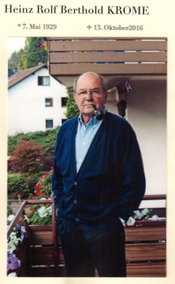

Liebe Kolleginnen und Kollegen,
unser sehr geschätzter Freund und Kollege Richard Kern

Nachruf. Am 13. Oktober 2016 verstarb unser Ehrenpräsident Heinz Krome.
Der Mensch den wir kannten, ist nicht mehr da wo er war,
aber überall, wo wir sind und seiner Gedenken.
Augustinus
Wir trauern um
Klaus Stahl
ehemals Lehrer an der Landesberufsschule für das
Hotel-und Gastgewerbe in Bad Überkingen.
Er war ein Kollege auf den wir uns immer verlassen konnten,
der die Berufsjugend unterstützt hat,
der allen Kollegen mit Rat und Tat geholfen hat wo er konnte.
Zu ihm hat die Berufsjugend aufgeschaut.
Er hat viele Jahre den Landeswettbewerb um den Rudolf Achenbach-Preis
für unseren Landesverband organisiert und geleitet,
Als Juror war er ein geachteter Fachmann dessen
sicheres Urteil sich bewährt hat.
Wir haben einen treuen Freund verloren den
wir nicht vergessen werden.
Wir denken auch an seine Familie und trauern mit ihr.
Kollege Zisler war seit 1983 Mitglied im Club der Köche
Restaurant- u. Hotelfachleute
Landkreis Ravensburg e. V.
Er war auch einige Jahre in der Vorstandschaft des Vereins
Kassier und Schriftführer.
Wir trauern mit den Kolleginnen und Kollegen des
Club der Köche Ravensburg um Gerhard Zisler.
Frieder Weber im Alter von 80 Jahren gestorben
Verband der Köche Deutschlands e. V. trauert um das Mitglied seines Ehrensenats
+ 26.12.2010
Bereits mit 21 Jahren hatte es für Frieder Weber geheißen, gastronomisch in die Verantwortung zu gehen. Durch den frühen Tod seiner Eltern musste der junge Mann 1952 gemeinsam mit seiner Schwester Marianne das Hotel Kronprinz übernehmen. Schon im Jahr zuvor war er in den Verband der Köche Deutschlands e. V. eingetreten. In internen Aufzeichnungen des Heilbronnner Zweigvereins wird Frieder ab Mitte der 60er Jahre als aktives Mitglied immer wieder erwähnt. Seine große berufliche Chance nutzte er - jetzt Küchenmeister - 1958, als ihm von der Stadt Heilbronn die Gastronomie in der wiederaufgebauten Harmonie übertragen wurde. 31 Jahre lang schrieb er hier ein Stück Geschichte mit Ballnächten, Altenfeiern, bunten Abenden und legendären Lumpenbällen an Fasching. Im Gedächtnis bleiben auch die Galaabende mit den Fischer-Chören, Max Greger, Günter Noris oder den Regensburger Domspatzen, die er als Chef einer Konzertspieldirektion organisiert hatte.
1970 wird Frieder Weber vom damaligen Geschäftsführer des VKD in den Vorstand des Berufsfachverbandes berufen. Die Heilbronner Vereinsmitglieder sind stolz, dass ihr Kollege von da an 40 Jahre dem VKD mit seinem Wissen und Taten zur Verfügung stand und stets dazu beigetragen hat, den Berufsstand des Kochs ins rechte Licht zu rücken und zu fördern.
1973 wurde Frieder Weber zum 2. Vorsitzenden des Vereins der Köche Heilbronn gewählt. Danach fanden Monatsversammlungen und die alljährlichen Nikolaustreffen in der Festhalle Harmonie statt, die Frieder als Pächter betrieben hat. Auch die jährlich durchgeführten Leistungsschauen der Bäcker, Metzger, Konditoren und Köche fanden in den Räumlichkeiten der Harmonie ihre Heimat. Frieder brachte mit seinem Harmonie-Team durch eine solide Ausbildung zahlreiche Köchinnen und Köche auf den Weg, und war lange Jahre bei der IHK Heilbronn-Franken als Prüfungsmeister tätig.
1976, 1981 und 1986 traf sich die ARGE Baden-Württemberg in der Harmonie bei Frieder Weber zur Arbeitstagung. Auch nach seinem Ausscheiden aus der Vorstandschaft des Heilbronner Kochvereins fanden zahlreiche Versammlungen und auch Festabende oder Bälle bei und mit Frieder Weber statt. So oft er konnte, nahm er an Veranstaltungen teil und prägte diese durch seine Aktivitäten, zum letzten Mal im Oktober 2010.
Durch seine direkte, offene und freundliche Art war Frieder über die Grenzen von Heilbronn bekannt und beliebt. Sein Auftreten als Haus- und Hoffotograf wurde von allen geachtet. Er versorgte immer die Beteiligten mit zahlreichen Bildern als Erinnerung an die unterschiedlichsten Veranstaltungen.
In seiner Funktion als Ehrensenator nahm er bis zuletzt seine Aufgaben im Verband der Köche Deutschlands wahr. Für seine Taten erhielt Frieder Weber vom Verein und Verband zahlreiche Ehrungen und Auszeichnungen. Er erhielt auch das Bundesverdienstkreuz.
Wir sind dankbar für die vielen gemeinsamen Jahre mit Frieder und das dabei Erlebte. Die Mitglieder des Vereins der Köche Heilbronn e.V. trauern um ihren „Amigo" Frieder. Wir verlieren einen guten Freund, ein Urgestein und eine prägende Persönlichkeit. Wir werden Frieder Weber immer ein ehrendes Andenken bewahren.
Ein letzter Gruß im Namen aller Mitglieder des Vereins der Köche Heilbronn e. V.
Volker Egen, 1. Vorsitzender,
und der Verband der Köche Deutschlands e. V.
Bernd Greiner
Vorsitzender
Kochklub Lörrach e.V.
+ 29.08.2009
Trauerrede für Bernd Greiner am 2.September 2009
Liebe Frau Hagist,
liebe Angehörige,
verehrte Trauergemeinde,
der Verband der Köche Deutschlands, dem Bernd Greiner seit 1986 angehörte und der Landesverband der Köche Baden-Württembergs, sowie der Zweigverein des Köcheclubs Lörrach e.V.1964 trauern um ihren Kollegen Bernd Greiner.
Ganz besonders die Kollegen des hiesigen Zweigvereins, in dem er als 2. Vorsitzender 4 Jahre mitarbeitete und den er seit 2002 als 1. Vorsitzender leitete, sind tief betroffen von seinem Tode.
Wir Köche verlieren mit Bernd Greiner einen äußerst sympathischen, stets Ruhe ausstrahlenden Kollegen, der sich für die Interessen unseres Berufsverbandes eingesetzt hat.
Noch 2008 hat er zusammen mit seinen Vereinskollegen die Frühjahrstagung des Landesverbands der Köche Baden-Württembergs hier mit viel persönlichem Einsatz organisiert. Kurze Zeit danach erfuhren wir von seiner schweren Krankheit..
Bei meinen Telefonaten mit Bernd hat er mir immer versichert, dass er den Kampf gegen die Krankheit aufnehmen wird. Nun hat er diesen Kampf verloren. Wir werden Bernd stets in Ehren gedenken.
Im Namen aller Kolleginnen und Kollegen des Zweigvereins des Köcheclubs Lörrach e.V. 1964, des Landesverbands der Köche Baden-Württemberg und des Verbands der Köche Deutschlands spreche ich Ihnen, liebe Frau Hagist und allen Angehörigen unser tiefes Mitgefühl aus.
Karl Haaf